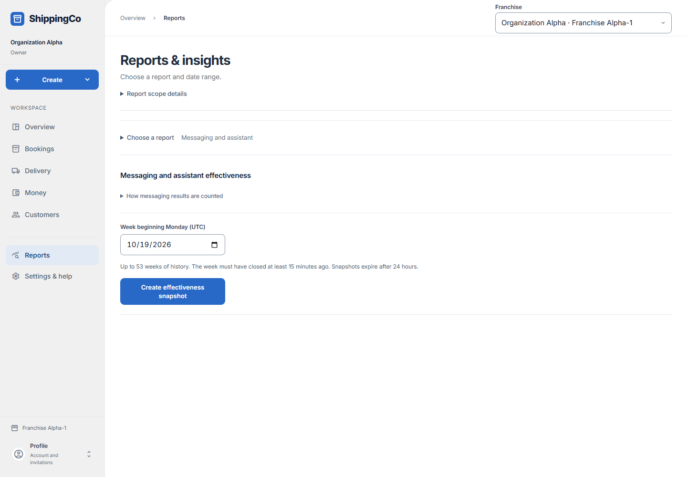
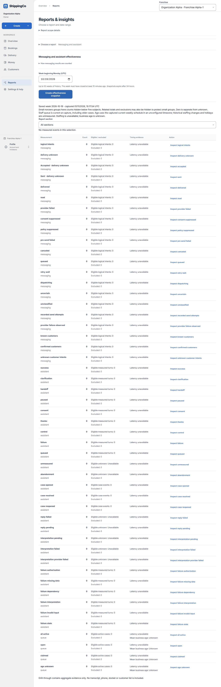

Messaging and assistant results
Review a saved weekly count of messages, assistant outcomes and support work.

Before you start
Choose a completed Monday-to-Monday week in UTC. This report is found in the reporting views.
Choose a closed week and read the saved counts
- Open Reports, expand Choose a report, and select Are customer messages working? / Messaging and assistant. Open How messaging results are counted for the definitions.
- Week beginning Monday (UTC) must be a Monday for a fully closed Monday-to-Monday week. Choose within the available 53 weeks; the week must have ended at least 15 minutes ago. Select Create effectiveness snapshot.
- After creation, check Saved week and captured time. Report section narrows the result to Messaging, Assistant or Queue, or shows All sections. Inspect on a measurement narrows to its category; Back to all categories removes that selection.
- Count is the measured total. Eligible describes the population used for that measure; Excluded records items not included. Suppressed means a small group is hidden for privacy, not zero. Unknown means there is insufficient evidence.
- Timing evidence may show mean receipt-to-record latency. Queue business age uses the staffing schedule saved at capture, including older open cases; it is not a promised response time. Missing staffing makes business age unknown.
- The report has aggregate evidence only, with no customer transcript, phone list or docket list. Accepted or Sent does not establish delivery. Tool success, thanks and staff resolution are different signals; calls saved and return on investment are not measured.
- Snapshots expire after 24 hours. Use Retry same effectiveness request if offered for an uncertain creation; Retry saved effectiveness reloads an existing report. If expired, create a new snapshot.
Quick steps
- Open Messaging and assistant effectiveness.
- Choose Week beginning Monday (UTC), then Create effectiveness snapshot.
- Choose Report section or select Inspect beside a measurement.
- Use Back to all categories to leave a category view. Create a new snapshot when the old one expires.
Fields on this screen
- Week beginning Monday (UTC): Required Monday date. Up to 53 weeks back. The week must have ended at least 15 minutes ago.
- Report section: All sections, messaging, assistant or queue.
What happens next
A fixed report is saved for 24 hours. It shows measured events, not a promise of business benefit. Small nonzero groups below five may be hidden for privacy.
If you get stuck
- Unavailable or expired: check access or create a new snapshot.
- Twenty active reports: reuse an existing report or wait for expiry.
- Accepted, sent and uncertain do not prove delivery.
- Unknown is not zero. Hidden counts are not zero either.
- Calls saved and return on investment are not measured.
Saved messaging and assistant measurements

About this guide
Checked against the current app source on 1 November 2026. Buttons depend on your access and the current record. This guide does not give extra access.